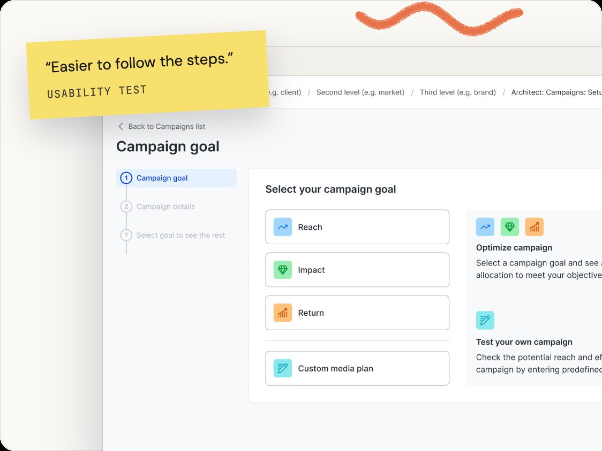
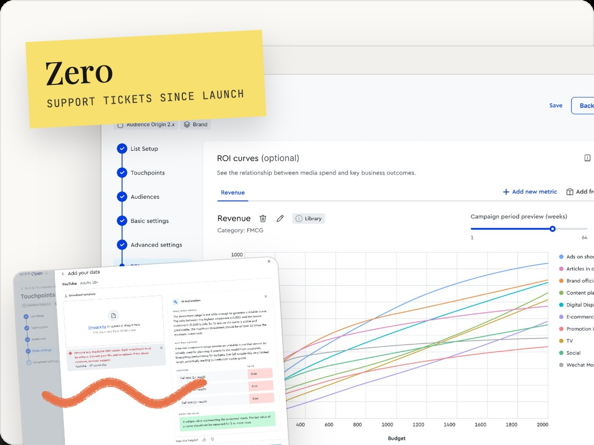
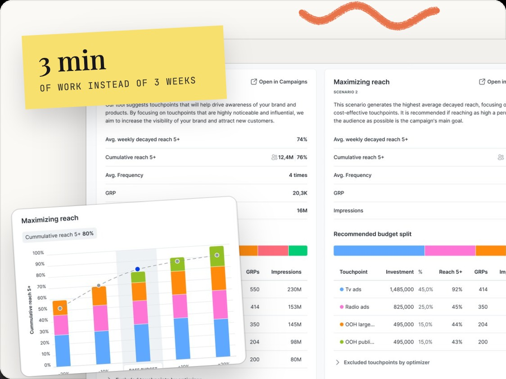
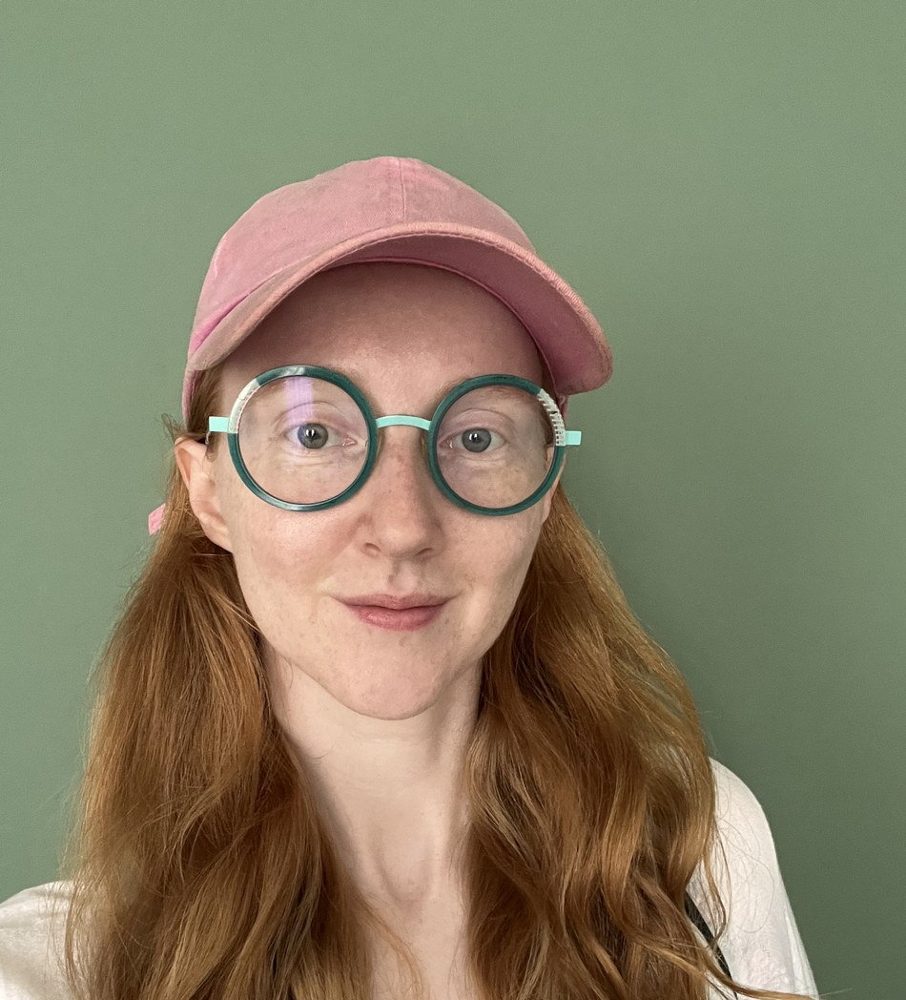

Senior Product Designer · Research & Data-Led · AI Enthusiast
The hard problems are the fun ones.
For nearly eight years, I've been making complex, data-driven products easy to use — for teams around the world. Confusing requirements, complicated edge cases, features people say can't be simplified: that's the part of my work as a designer that I enjoy most. Lately I don't do it alone — there's an AI in the mix now, and together we stress-test every possible solution, the sensible ones and the ridiculous ones.
Selected work
Case studies

Rebuilding Campaign Planning
Turning one agency's internal tool into a company-wide platform — as the first team to pilot WPP's new design system.

A run of smaller problems
Five things that were quietly broken — a validation error nobody could read, benchmark data locked behind a file upload, a review screen people dreaded — and how I fixed them.

Express Scenarios
A structured survey across three UI concepts turned a stuck design debate into an evidence-backed decision.
About me
When I joined my team, no one had ever run a single research study. Now we start every initiative with users.

Kind words
What it's like to work with me
Kasia is an outstanding designer, confident working with data and technical teams to translate user research into clear, intuitive experiences. Her ability to connect user needs with technical perspectives was instrumental in developing thoughtful and effective solutions.
She excelled at translating human needs into practical technological solutions, serving as a natural bridge between people and machines.
She combines a rare mix: strong design skills with a genuine talent for leading people. I recommend her to any team looking for a leader who builds a culture of trust and high-quality design.
She doesn't just design screens — she maps out the full data flow, catches logic issues early, and prevents problems that would've surfaced much later in development. She's equally sharp in user research sessions and stakeholder meetings, always making sure everyone in the room walks away aligned.
Tools & methods
Let's work together
Open to new opportunities.
Send a note about the role or project you have in mind — email katarzynkamoszczynska@gmail.com or reach me on LinkedIn. I'm always up for a good problem — and I can't wait to hear what you're working on.